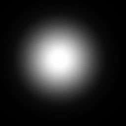

UDN
Search public documentation:
VolumetricLightbeamTutorial
日本語訳
中国翻译
한국어
Interested in the Unreal Engine?
Visit the Unreal Technology site.
Looking for jobs and company info?
Check out the Epic games site.
Questions about support via UDN?
Contact the UDN Staff
中国翻译
한국어
Interested in the Unreal Engine?
Visit the Unreal Technology site.
Looking for jobs and company info?
Check out the Epic games site.
Questions about support via UDN?
Contact the UDN Staff
UE3 Home > Lighting & Shadows > Volumetric Light Beam Tutorial
UE3 Home > Particle & Effects > Fog Effects > Volumetric Light Beam Tutorial
UE3 Home > Particle & Effects > Fog Effects > Volumetric Light Beam Tutorial
Volumetric Light Beam Tutorial
Overview
What to Expect
LightBeams
Creating the Static Mesh
The EngineVolumetrics package already has three cone variants with different angles, but they all have the same UV’s. This section will tell you what you need to do in order to make more custom cone meshes to work with this material. Create a cylinder with a tapered edge and unwrap it so that there is only one seam in the UV’s. It is important to have clean UV’s since the material calculations are done in tangent space and sloppy UV’s could cause visual distortion later on. The more tessellated your mesh is, the smoother the falloff will be for the end result (a 16-sided cylinder with 4 vertical slices is fine). The three cone variants already in EngineVolumetrics should be enough for most cases.Creating the Material
The creation of the material is the most involved part of the process. First we will get the light-beam functioning at its most basic level, then we will solve each one of the artifacts one at a time.FalloffTexture
First we need to create a falloff texture. The appearance of the falloff texture is largely responsible for the appearance of the end result. This falloff texture has been created entirely with the Render->Light Effects filter in Photoshop. One fuzzy black line is drawn on top. \\Build\UnrealEngine3-Build\Engine\Content\EngineVolumetrics.LightBeam.Materials. T_EV_LightBeam_Falloff_01 The important qualities to take note of are that the texture is completely black around all edges and the top of the texture fades to black. This helps to hide the position of the top edges of the Static Mesh. Make sure the texture properties are set to Clamp. The texture sample for this in the material will be a TextureSample2DParameter so that you can use a variety of different falloff textures on your lightbeams.Setting up the Material
Now we are ready to start creating the material. Create a new material and set the following options in the material settings: BlendMode: BLEND_Translucent LightModel: MLM_Unlit TwoSided: True We will only be using two of the material input fields: Emissive and Opacity. The emissive field should contain only the color information of the beam. For now a simple VectorParameter (1, 1, 1, 1) is used for the emissive. The Alpha channel of the VectorParameter is multiplied by the RGB. This lets you use the Alpha as to modify the Brightness so that you can use the color picker to choose RGB values (which only supports values <1) and still make the lightbeam insanely emissive if you want to. Being able to change luminosity independent of color is often very useful. The opacity field is where most of the magic occurs. It will handle the falloff of the beam and may contain texture information to add dust or scrolling smoke. We will use the falloff texture shown above as the opacity. For the texture coordinates of the falloff texture, we use a Reflection Vector to generate the X component while the Y component is supplied by the Static Mesh’s UV’s. This will orient the texture to face the camera along the X axis, relative to the static mesh’s rotation. Generating the X component takes a bit of work. Reflection vectors output a range of numbers from -1 to 1. We want a range of numbers from 0-1 since we will be using the results as texture coordinates. We can change the range of a Reflection vector to be 0-1 simply by multiplying by 0.5, and then adding 0.5. Once the range is correct, the AppendVector expression combines our Generated X coordinate with the Y coordinate in from the Static Mesh’s UV’s. The output of this AppendVector is ready to supply UV’s to our FalloffTexture Here is what our light-beam now looks like: While this is a good starting point, our lightbeam material is by no means complete. Take a look at the artifacts we can introduce into the scene: As I said in the introduction to this guide, each of these problems can be solved by using the proper material expressions.Fixing the Artifacts
Looks bad viewed from Underneath
The method we are currently using (strictly X channel falloff) makes our beam look great when viewed from the side, but offers little help when the beam is viewed from an underneath angle. To correct the way the beam looks when viewed from underneath, we will use a second falloff texture and multiply it with our existing falloff texture. I used a blurry dot for the second falloff texture.  Make sure the texture properties are set to Clamp. Much like before, we use a reflection vector to generate texture coordinates for the second falloff texture. For the texture coordinates of this texture, we will use the X and Y components from the reflection vector. The ReflectionVector(X,Y) gets multiplied by a constant to adjust it slightly to better hide the edges. I used 0.3 but other values will work too. Here is what the light-beam should now look like when viewed from underneath: No more hard edges should be visible. If you still see hard edges, you simply need to tweak the falloff texture or the multiple of the ReflectionVector(X,Y).
No more hard edges should be visible. If you still see hard edges, you simply need to tweak the falloff texture or the multiple of the ReflectionVector(X,Y).